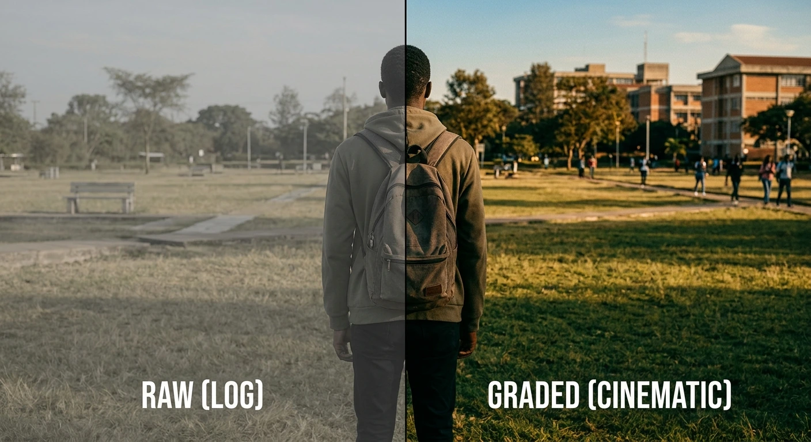

Project 04
Color, Reconsidered.
A post-production study of how color changes the feeling of a frame.

The idea
One frame, a different atmosphere.
A grading breakdown showing source footage and the finished look, with attention to contrast, color relationships, and shot consistency.
TypePost-production study
DisciplinesColor grading, finishing
Project details
Creative brief
Show how color grading changes the feeling of a frame through a before/after breakdown.
RecBay's role
Color grading and finishing.
Process
Source selection → primary grade → secondary refinements → shot matching → delivery.
Deliverables
Graded master and before/after comparisons.
Year
2026.